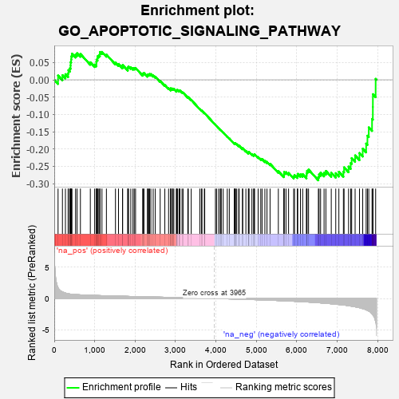
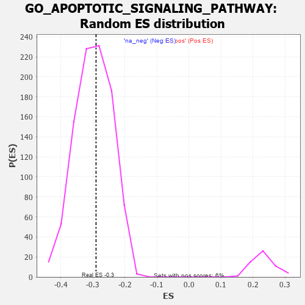

| | | Dataset | 7d |
| Phenotype | NoPhenotypeAvailable |
| Upregulated in class | na_neg |
| GeneSet | GO_APOPTOTIC_SIGNALING_PATHWAY |
| Enrichment Score (ES) | -0.2903952 |
| Normalized Enrichment Score (NES) | -0.9706638 |
| Nominal p-value | 0.54082716 |
| FDR q-value | 0.90155846 |
| FWER p-Value | 1.0 |
Table: GSEA Results Summary

Fig 1: Enrichment plot: GO_APOPTOTIC_SIGNALING_PATHWAY
Profile of the Running ES Score & Positions of GeneSet Members on the Rank Ordered List
| PROBE | GENE SYMBOL | GENE_TITLE | RANK IN GENE LIST | RANK METRIC SCORE | RUNNING ES | CORE ENRICHMENT | | 1 | UBE2K | | | 94 | 1.739 | 0.0124 | No |
| 2 | BCL3 | | | 202 | 1.047 | 0.0134 | No |
| 3 | HGF | | | 276 | 0.870 | 0.0163 | No |
| 4 | DAPK2 | | | 343 | 0.754 | 0.0184 | No |
| 5 | GSK3A | | | 351 | 0.745 | 0.0280 | No |
| 6 | BAX | | | 387 | 0.711 | 0.0335 | No |
| 7 | RRP8 | | | 403 | 0.699 | 0.0413 | No |
| 8 | NBN | | | 405 | 0.696 | 0.0510 | No |
| 9 | RAD9A | | | 418 | 0.681 | 0.0590 | No |
| 10 | MLH1 | | | 423 | 0.679 | 0.0680 | No |
| 11 | RRN3 | | | 438 | 0.667 | 0.0756 | No |
| 12 | HTRA2 | | | 527 | 0.621 | 0.0730 | No |
| 13 | NLE1 | | | 565 | 0.609 | 0.0769 | No |
| 14 | NOC2L | | | 647 | 0.578 | 0.0746 | No |
| 15 | HMGB2 | | | 892 | 0.507 | 0.0506 | No |
| 16 | DEDD2 | | | 999 | 0.484 | 0.0438 | No |
| 17 | AKT1 | | | 1040 | 0.476 | 0.0454 | No |
| 18 | YAP1 | | | 1041 | 0.475 | 0.0520 | No |
| 19 | TAF9 | | | 1046 | 0.475 | 0.0582 | No |
| 20 | XPA | | | 1070 | 0.469 | 0.0618 | No |
| 21 | AIFM1 | | | 1072 | 0.469 | 0.0683 | No |
| 22 | DDX47 | | | 1103 | 0.463 | 0.0709 | No |
| 23 | SRC | | | 1128 | 0.459 | 0.0743 | No |
| 24 | NCK2 | | | 1131 | 0.458 | 0.0804 | No |
| 25 | TFDP1 | | | 1180 | 0.450 | 0.0806 | No |
| 26 | PARL | | | 1290 | 0.432 | 0.0728 | No |
| 27 | INHBB | | | 1514 | 0.388 | 0.0497 | No |
| 28 | ERP29 | | | 1589 | 0.376 | 0.0455 | No |
| 29 | WWOX | | | 1688 | 0.359 | 0.0380 | No |
| 30 | HYOU1 | | | 1692 | 0.358 | 0.0427 | No |
| 31 | MSH2 | | | 1819 | 0.334 | 0.0313 | No |
| 32 | SGPL1 | | | 1820 | 0.334 | 0.0359 | No |
| 33 | GATA4 | | | 1837 | 0.330 | 0.0385 | No |
| 34 | CUL3 | | | 1893 | 0.321 | 0.0360 | No |
| 35 | CUL5 | | | 1947 | 0.314 | 0.0336 | No |
| 36 | BRSK2 | | | 1979 | 0.308 | 0.0340 | No |
| 37 | RAF1 | | | 2011 | 0.303 | 0.0343 | No |
| 38 | MEIS3 | | | 2188 | 0.278 | 0.0157 | No |
| 39 | ATAD5 | | | 2197 | 0.277 | 0.0186 | No |
| 40 | TRAP1 | | | 2219 | 0.274 | 0.0197 | No |
| 41 | GSKIP | | | 2304 | 0.259 | 0.0126 | No |
| 42 | UBE4B | | | 2313 | 0.258 | 0.0152 | No |
| 43 | FAF1 | | | 2340 | 0.255 | 0.0155 | No |
| 44 | MIF | | | 2357 | 0.252 | 0.0170 | No |
| 45 | HIPK2 | | | 2389 | 0.247 | 0.0165 | No |
| 46 | KDM1A | | | 2447 | 0.237 | 0.0125 | No |
| 47 | MELK | | | 2499 | 0.227 | 0.0092 | No |
| 48 | BAG3 | | | 2620 | 0.209 | -0.0032 | No |
| 49 | CUL1 | | | 2735 | 0.193 | -0.0151 | No |
| 50 | BECN1 | | | 2828 | 0.179 | -0.0243 | No |
| 51 | DAPK3 | | | 2880 | 0.169 | -0.0285 | No |
| 52 | CUL2 | | | 2882 | 0.169 | -0.0262 | No |
| 53 | PDCD5 | | | 2885 | 0.169 | -0.0241 | No |
| 54 | ERO1A | | | 2925 | 0.162 | -0.0268 | No |
| 55 | ACVR1 | | | 2932 | 0.161 | -0.0253 | No |
| 56 | BTK | | | 2958 | 0.156 | -0.0263 | No |
| 57 | WNT4 | | | 3023 | 0.146 | -0.0325 | No |
| 58 | BRCA2 | | | 3024 | 0.146 | -0.0304 | No |
| 59 | PIAS4 | | | 3034 | 0.145 | -0.0295 | No |
| 60 | BIRC6 | | | 3047 | 0.143 | -0.0291 | No |
| 61 | HDAC1 | | | 3086 | 0.138 | -0.0320 | No |
| 62 | CUL4A | | | 3097 | 0.137 | -0.0313 | No |
| 63 | GPX1 | | | 3109 | 0.135 | -0.0308 | No |
| 64 | ERN2 | | | 3160 | 0.129 | -0.0354 | No |
| 65 | TM2D1 | | | 3186 | 0.124 | -0.0369 | No |
| 66 | SMAD3 | | | 3303 | 0.105 | -0.0502 | No |
| 67 | PARP2 | | | 3316 | 0.103 | -0.0503 | No |
| 68 | DDX3X | | | 3388 | 0.091 | -0.0581 | No |
| 69 | STK25 | | | 3602 | 0.059 | -0.0845 | No |
| 70 | DIDO1 | | | 3641 | 0.053 | -0.0886 | No |
| 71 | FIS1 | | | 3654 | 0.051 | -0.0894 | No |
| 72 | NF1 | | | 3713 | 0.040 | -0.0963 | No |
| 73 | DAXX | | | 3722 | 0.038 | -0.0968 | No |
| 74 | EYA1 | | | 3987 | -0.006 | -0.1304 | No |
| 75 | PARP1 | | | 4014 | -0.010 | -0.1336 | No |
| 76 | SFRP2 | | | 4065 | -0.018 | -0.1397 | No |
| 77 | TRAF1 | | | 4104 | -0.024 | -0.1442 | No |
| 78 | ABL1 | | | 4125 | -0.027 | -0.1464 | No |
| 79 | MSH6 | | | 4129 | -0.028 | -0.1464 | No |
| 80 | PDX1 | | | 4179 | -0.038 | -0.1521 | No |
| 81 | PSME3 | | | 4280 | -0.056 | -0.1641 | No |
| 82 | OPA1 | | | 4330 | -0.065 | -0.1695 | No |
| 83 | SYVN1 | | | 4454 | -0.085 | -0.1840 | No |
| 84 | ERCC6 | | | 4464 | -0.087 | -0.1839 | No |
| 85 | LRRK2 | | | 4467 | -0.087 | -0.1829 | No |
| 86 | HIP1 | | | 4485 | -0.092 | -0.1838 | No |
| 87 | SNW1 | | | 4514 | -0.096 | -0.1861 | No |
| 88 | BAG6 | | | 4563 | -0.108 | -0.1907 | No |
| 89 | SGPP1 | | | 4573 | -0.112 | -0.1903 | No |
| 90 | FGFR3 | | | 4656 | -0.129 | -0.1989 | No |
| 91 | ITPR1 | | | 4661 | -0.130 | -0.1976 | No |
| 92 | PDIA3 | | | 4740 | -0.147 | -0.2055 | No |
| 93 | TERT | | | 4801 | -0.157 | -0.2110 | No |
| 94 | P2RX4 | | | 4813 | -0.161 | -0.2101 | No |
| 95 | FBXW7 | | | 4816 | -0.161 | -0.2081 | No |
| 96 | CLU | | | 4889 | -0.174 | -0.2149 | No |
| 97 | CASP1 | | | 4932 | -0.185 | -0.2176 | No |
| 98 | EP300 | | | 4941 | -0.186 | -0.2160 | No |
| 99 | PRKDC | | | 4955 | -0.189 | -0.2151 | No |
| 100 | PDPK1 | | | 5043 | -0.207 | -0.2233 | No |
| 101 | MMP9 | | | 5108 | -0.227 | -0.2283 | No |
| 102 | FLCN | | | 5140 | -0.235 | -0.2289 | No |
| 103 | ATM | | | 5210 | -0.249 | -0.2342 | No |
| 104 | PTEN | | | 5262 | -0.261 | -0.2371 | No |
| 105 | SGK3 | | | 5338 | -0.282 | -0.2427 | No |
| 106 | FGFR1 | | | 5543 | -0.332 | -0.2641 | No |
| 107 | CASP8 | | | 5678 | -0.369 | -0.2761 | No |
| 108 | CDIP1 | | | 5684 | -0.370 | -0.2715 | No |
| 109 | MADD | | | 5686 | -0.371 | -0.2664 | No |
| 110 | DAP | | | 5732 | -0.386 | -0.2668 | No |
| 111 | LAMP1 | | | 5796 | -0.404 | -0.2691 | No |
| 112 | STK11 | | | 5922 | -0.443 | -0.2789 | No |
| 113 | PCGF2 | | | 5943 | -0.451 | -0.2751 | No |
| 114 | XBP1 | | | 6011 | -0.475 | -0.2770 | No |
| 115 | JMY | | | 6023 | -0.479 | -0.2717 | No |
| 116 | UBB | | | 6090 | -0.503 | -0.2731 | No |
| 117 | STK4 | | | 6145 | -0.518 | -0.2727 | No |
| 118 | GGCT | | | 6239 | -0.550 | -0.2769 | No |
| 119 | VDAC2 | | | 6242 | -0.553 | -0.2694 | No |
| 120 | TFAP4 | | | 6254 | -0.556 | -0.2630 | No |
| 121 | TRAF7 | | | 6290 | -0.571 | -0.2595 | No |
| 122 | DYRK2 | | | 6533 | -0.677 | -0.2809 | Yes |
| 123 | STK24 | | | 6550 | -0.684 | -0.2733 | Yes |
| 124 | RNF41 | | | 6588 | -0.703 | -0.2682 | Yes |
| 125 | RFFL | | | 6674 | -0.749 | -0.2686 | Yes |
| 126 | GSK3B | | | 6719 | -0.768 | -0.2634 | Yes |
| 127 | AEN | | | 6852 | -0.842 | -0.2685 | Yes |
| 128 | DNM1L | | | 6963 | -0.913 | -0.2697 | Yes |
| 129 | RNF34 | | | 7040 | -0.963 | -0.2659 | Yes |
| 130 | DDX5 | | | 7152 | -1.037 | -0.2655 | Yes |
| 131 | AR | | | 7169 | -1.046 | -0.2529 | Yes |
| 132 | CIB1 | | | 7280 | -1.152 | -0.2508 | Yes |
| 133 | CYLD | | | 7333 | -1.206 | -0.2405 | Yes |
| 134 | WDR35 | | | 7357 | -1.225 | -0.2263 | Yes |
| 135 | CASP2 | | | 7442 | -1.322 | -0.2185 | Yes |
| 136 | DCC | | | 7550 | -1.470 | -0.2115 | Yes |
| 137 | PDCD6 | | | 7630 | -1.615 | -0.1990 | Yes |
| 138 | BOK | | | 7715 | -1.817 | -0.1842 | Yes |
| 139 | CASP3 | | | 7747 | -1.902 | -0.1615 | Yes |
| 140 | ST18 | | | 7780 | -2.007 | -0.1374 | Yes |
| 141 | TRAF2 | | | 7861 | -2.481 | -0.1129 | Yes |
| 142 | FYN | | | 7881 | -2.622 | -0.0785 | Yes |
| 143 | CHAC1 | | | 7882 | -2.633 | -0.0416 | Yes |
| 144 | DAPK1 | | | 7950 | -3.767 | 0.0027 | Yes |
Table: GSEA details [plain text format]

Fig 2: GO_APOPTOTIC_SIGNALING_PATHWAY: Random ES distribution
Gene set null distribution of ES for GO_APOPTOTIC_SIGNALING_PATHWAY